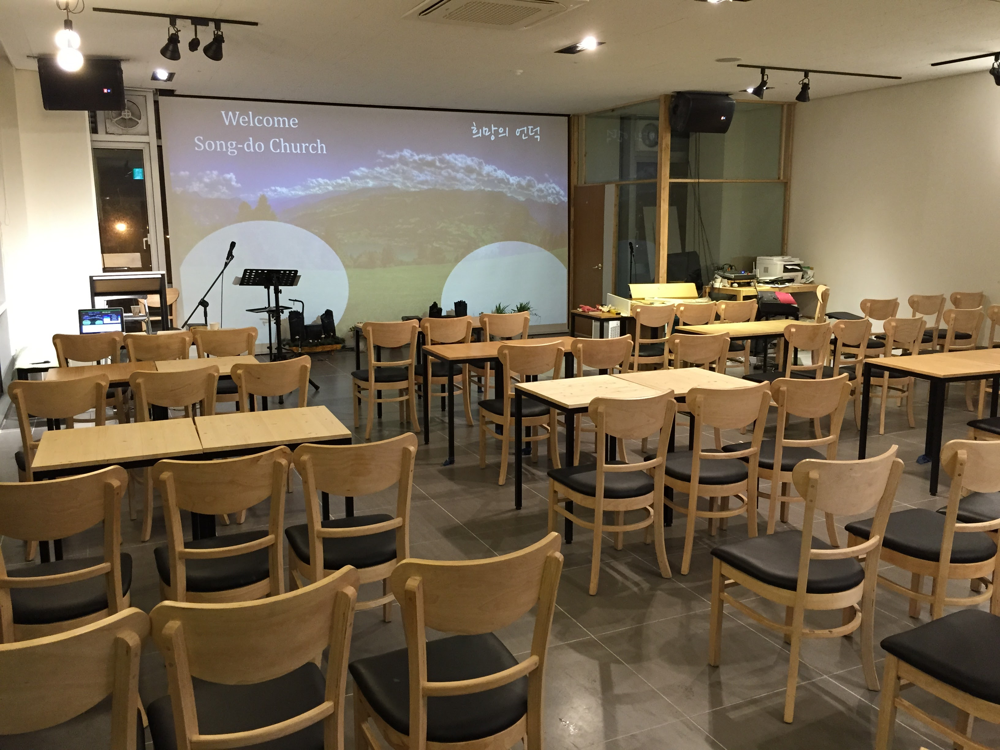

2026년도 교회 임원 선거 결과 공고
안녕하십니까, 송도교회 성도 여러분.
기도와 헌신 속에 진행된 2026년도 교회 임원 선거 결과를 다음과 같이 공고합니다. 새롭게 선출된 임원분들이 주님의 사역을 기쁨으로 감당할 수 있도록 성도님들의 많은 기도 부탁드립니다.

[선거 결과 요약]
- 수석장로: OOO 장로
- 재무부장: OOO 집사
- 선교부장: OOO 집사
- 안교부장: OOO 집사
임원 임명장 수여식은 다음 주 안식일 대예배 시간에 진행될 예정입니다. 감사합니다.